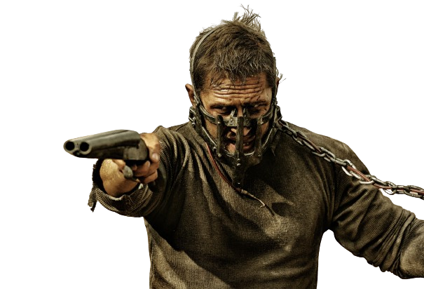
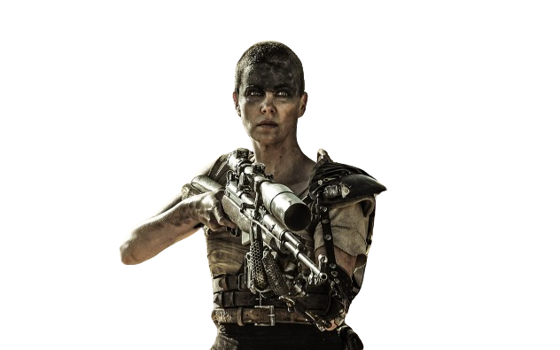
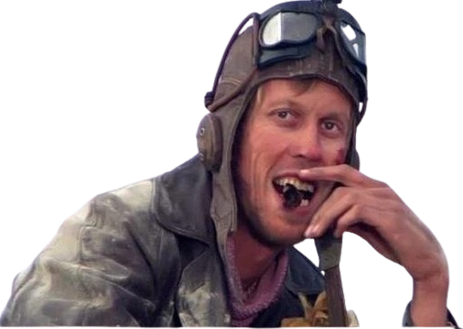
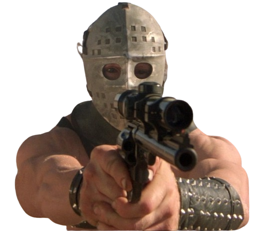
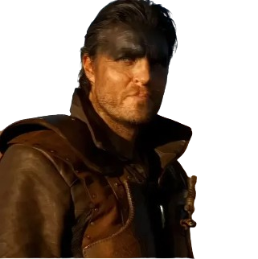

-
Max Rockatansky
12/10
Lone Wander - Human Soldier
Description
Max Rockatansky, known as "Mad Max," is the central character in the Mad Max series. Originally a police officer, he becomes a lone drifter after losing his family in a lawless, post-apocalyptic world. Portrayed by Mel Gibson and later Tom Hardy, Max is a tough survivor navigating a harsh wasteland, driven by a deep sense of justice. Despite his solitary nature and personal scars, he often helps others in their fight against brutal warlords, embodying resilience and humanity amidst chaos.
-
Imperator Furiosa
12/10
Lone Wander - Human Soldier
Description
Imperator Furiosa, played by Charlize Theron in Mad Max: Fury Road, is a formidable warrior who rebels against the tyrant Immortan Joe. With a mechanical arm and exceptional combat skills, she leads a daring escape to free his enslaved wives. Fierce and resilient, Furiosa becomes a beacon of hope and defiance in the harsh desert wasteland.With a mechanical arm and unparalleled combat skills, Furiosa is a powerful and strategic leader. She embodies strength, resilience, and a deep desire for redemption and freedom.
-
Immortan Joe
9/9

Lone Wander - Human Soldier
Description
Immortan Joe is the primary antagonist in Mad Max: Fury Road. Portrayed by Hugh Keays-Byrne, he is a ruthless and tyrannical warlord ruling over the Citadel, a fortress in a desolate, post-apocalyptic wasteland. Joe controls the region’s scarce water supply, maintaining power through fear and oppression. Physically imposing and adorned with a grotesque mask and body armor, Joe is a symbol of brute force and exploitation.He keeps a harem of wives for breeding and commands a fanatical army called the War Boys, who worship him as a god.
-
Gyro Captain
6/9
Legendary Creature - Human Soldier
Description
Captain Gyro, also known as the Gyro Captain, is a quirky and resourceful character in "Mad Max 2: The Road Warrior," played by Bruce Spence. He roams the post-apocalyptic desert in his gyrocopter, initially trying to rob Max but eventually joining forces with him. Dressed in eccentric attire, the Gyro Captain uses clever traps and his pet snakes to survive. Despite his oddities, he proves brave and loyal, helping Max against the marauding forces of Lord Humungus and later leading the settlers towards a hopeful future in north.
-
Lord Humungus
12/12
Legendary Creature - Human Soldier
Description
Humungus is a prominent character in the movie "Mad Max 2: The Road Warrior." He is the leader of a violent gang known as the Marauders, who terrorize survivors in a post-apocalyptic wasteland. Humungus is depicted as a menacing figure, wearing a distinctive hockey mask and commanding his gang with ruthless efficiency. He plays a central antagonist role, pursuing Max and others for control over valuable resources like gasoline. Despite his intimidating appearance and actions, Humungus is also portrayed with a sense of tragic grandeur, embodying the harsh survival instincts of a world plunged into chaos.
-
Pretiorian Jack
9/9
Legendary Creature - Human Soldier
Descrição
Pretorian Jack is a character from the "Mad Max: Furiosa" film, known for his loyalty and fierce combat skills as a member of Immortan Joe's elite guards, the War Boys. Jack, like his fellow War Boys, is fiercely devoted to Immortan Joe, the tyrannical ruler of the Citadel. He participates in high-speed vehicular battles and relentless pursuits against Furiosa and Max, who challenge Immortan Joe's authority. Jack's distinctive appearance includes war paint, tattoos, and a strong adherence to the cult-like beliefs propagated by Immortan Joe. His role highlights themes of fanaticism, survival, and the brutal societal hierarchy within the dystopian world depicted in the Mad Max universe.